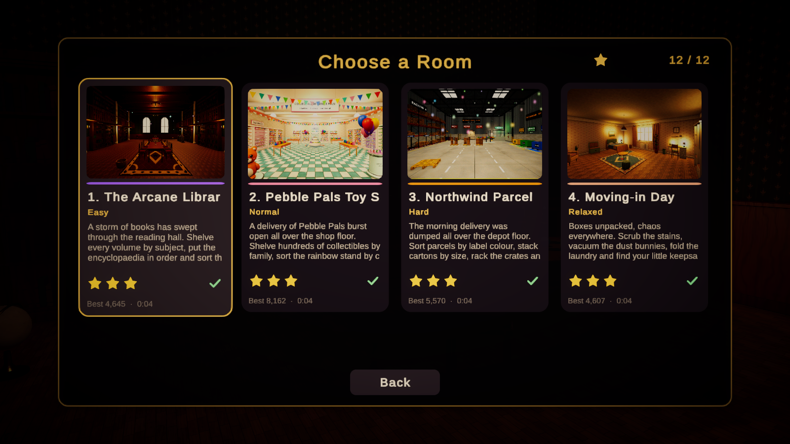

Objectives & Level Progression
Objectives define when a level is finished. Levels group objectives with time limits, stars and unlock rules. A catalog orders levels for Level Select.
Creating objectives
Create objectives with Create > Tidy Up Framework > Objectives. Every objective has an id, a title with {current} and {target} placeholders, an optional icon, and a bonus score awarded the first time it completes.
| Objective | Complete when | Example title |
|---|---|---|
| Place Objects | N objects matching a filter are placed (optionally correctly, optionally in specific targets). N = 0 means "all of them". | Shelve the spell books {current}/{target} |
| Complete Targets | Listed targets (or all counting targets, or targets with an id prefix) report complete, including order and grouping. | Finish every shelf {current}/{target} |
| Clear Clutter | Every object flagged as clutter is placed or disposed. | Clear the floor {current}/{target} |
| Clean Surfaces | Cleanable surfaces (optionally one group) are clean. | Scrub the stains {current}/{target} |
| Find Objects | Objects flagged Requires Discovery were picked up. | Find the lost keys {current}/{target} |
| Reach Score | The score reaches a value. | Score 2,000 points |
| Finish Within Time | The level is completed before the limit (resolved at the end). | Finish within {limit} |
| Limit Mistakes | Mistakes stay at or below the allowance (resolved at the end). | No wrong placements |
Objectives are evaluated from scene state rather than from counted events, so removing an object from a shelf correctly lowers progress again, and pre-placed objects count from the first frame.
Level definitions
| Section | Fields |
|---|---|
| Identity | Level Id, Display Name, Description, Scene Name, Thumbnail, Difficulty, Accent Color |
| Objectives | List of objectives; tick Optional for bonus goals |
| Time | Time Limit (0 = none), Fail When Time Runs Out |
| Stars | Metric (Score, Time, Mistakes) and thresholds for 2 and 3 stars. Completing always gives 1 star. |
| Systems | Score, Combo, Hint and Tutorial definitions. Missing ones use defaults. |
| Audio | Music and ambience cues started with the level |
| Progression | Unlock requirement (default unlocked, previous level, total stars) and a generic reward amount |
Assign the level to the TidyLevelManager in the scene. The manager starts automatically, builds objective trackers, listens to placement and cleaning events, runs the timer and combo, and completes the level when every required objective is complete.
Level progression and Level Select
- Create a catalog with Create > Tidy Up Framework > Level Catalog and list your levels in order. Set the main menu scene name.
- Assign the catalog in
Resources/TidyUpFrameworkSettings. - Add every level scene to the build scene list. The Level Validator checks this.
- The main menu's Play button continues with the first unlocked, unfinished level; Level Select shows cards with stars, best score, best time and lock state.

Completion, stars and results
When requirements are met the manager waits Completion Delay seconds (letting the final placement animation and celebration play), resolves end-of-level objectives, adds completion bonuses, computes stars and records the result through ITidyProgressService. The results screen counts up the score, pops the earned stars and lists the score breakdown.
Creating custom objectives
using TidyUpFramework.Levels;
using TidyUpFramework.Objectives;
using TidyUpFramework.Objects;
using UnityEngine;
[CreateAssetMenu(menuName = "Tidy Up Framework/Objectives/Inspect Objects")]
public sealed class InspectObjectsObjective : TidyObjectiveDefinition
{
[SerializeField] int requiredCount = 3;
public override TidyObjectiveProgress Evaluate(TidyLevelContext context)
{
var picked = 0;
foreach (var tidyObject in context.Objects)
{
if (tidyObject.HasBeenPickedUp)
{
picked++;
}
}
return new TidyObjectiveProgress(Mathf.Min(picked, requiredCount), requiredCount);
}
}TidyLevelContext exposes the level, score, combo, elapsed time, correct placements, mistakes, hints used, cleaned surfaces, disposed clutter and the object, target and cleanable registries. Override IsResolvedAtLevelEnd for goals that can only be judged when the level ends.